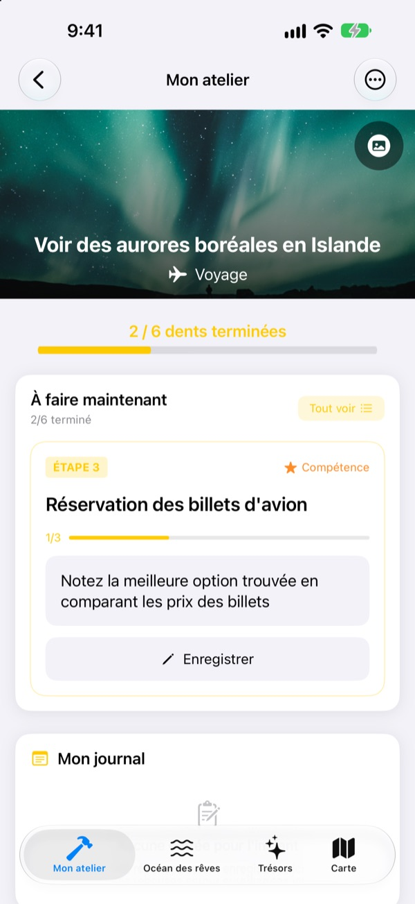
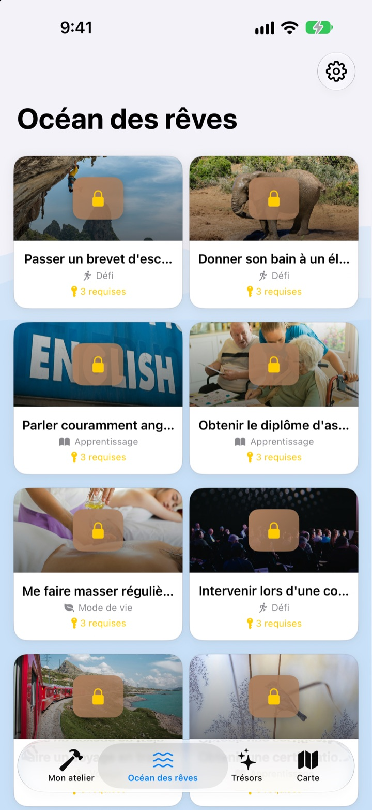
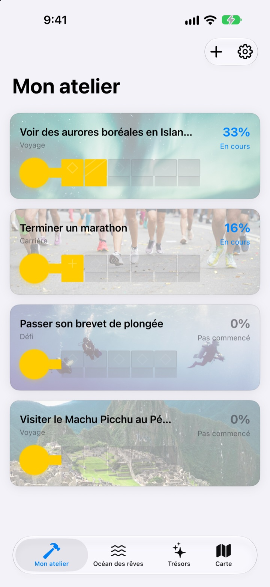
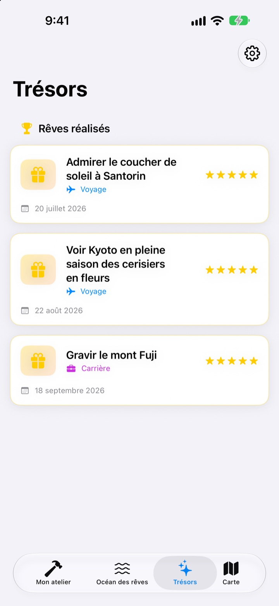

Ne vous contentez pas
d’écrire vos rêves
Choisissez un rêve, et les petites étapes qui y mènent deviennent les dents d’une clé. Répondez à l’étape du jour, une question à la fois, et le coffre finit par s’ouvrir.
Un seul achat, toutes les fonctions. Ni abonnement, ni publicité.

Terminez la clé
Il reste deux étapes au rêve des aurores boréales. Répondez à chaque question en une ligne (ou laissez vide) et touchez « Suivant ». Chaque étape terminée remplit une dent, et une clé complète ouvre le coffre.
Déjà écrit une liste de rêves… puis oubliée ?
« Voir des aurores boréales », c’est si vaste qu’on ne sait pas par où commencer, alors ça reste sur la liste pendant des années. Dream Seeker découpe ce rêve en étapes faisables aujourd’hui, comme vérifier la saison, mettre de l’argent de côté ou réserver les vols, et ne vous montre que celle du moment.
Plus de 590 rêves au choix
Voyages, expériences, réussites, santé, apprentissage et relations : des rêves de six domaines flottent dans des coffres sur l’Océan des rêves. Prenez-en un dans votre atelier, ses étapes sont déjà prêtes.
Le vôtre n’y est pas ? Créez-le avec un titre, un domaine et les étapes nécessaires.

Une dent à la fois, juste ce qu’il faut pour aujourd’hui
Mon atelier montre où en est la clé de chaque rêve. L’étape du moment est tout en haut, et répondre à ses questions remplit une dent.
Vos réponses et vos photos s’accumulent dans Mon journal, et la chronologie vous permet de revoir tout le chemin parcouru.

Les rêves réalisés au trésor, les lieux sur la carte
Remplissez toutes les dents et ouvrez le coffre. Les rêves réalisés s’ajoutent aux Trésors avec leur date, et les rêves en pause y attendent que vous les repreniez.
Les rêves liés à un lieu apparaissent sur la carte : tous les endroits où vous voulez aller, d’un coup d’œil.

Trois étapes pour commencer
- 1
Choisissez un rêve
Touchez un coffre sur l’Océan des rêves, puis « Prendre dans mon atelier ».
- 2
Répondez à l’étape du jour
Répondez une à une aux questions de l’étape en haut pour remplir une dent.
- 3
Ouvrez le coffre
Quand toutes les dents sont remplies, la clé est prête et le coffre s’ouvre.
Six domaines sur l’Océan des rêves
- Voyage
- Voir des aurores boréales en Islande · Admirer le coucher de soleil à Santorin
- Expérience
- Faire du parachutisme · Voler en parapente
- Réussite
- Terminer un marathon · Trek jusqu'au camp de base de l'Everest
- Santé
- Faire 20 tractions · Se sculpter des abdos
- Apprentissage
- Parler couramment anglais · Parler couramment français
- Relations
- Faire le tour du monde avec ses parents · Passer un mois à Jeju entre amis
Chaque domaine compte près d’une centaine de rêves. Créez les vôtres avec « Ajouter un nouveau rêve » dans Mon atelier.
Un seul achat, tout est inclus
L’app
- Plus de 590 rêves avec des questions à chaque étape
- Vos propres rêves
- Mon journal avec photos, et la chronologie
- Trésors et carte
- Mode Ascension
- Les mises à jour à venir
Soutenir le développeur (facultatif)
- Si l’app vous aide, vous pouvez laisser un petit pourboire depuis les réglages
- Un pourboire ne débloque rien. Sans lui, toutes les fonctions restent à vous
Des pourboires ponctuels, pas un abonnement.
Rien n’est payant dans l’app. Ni compte, ni publicité.
Questions fréquentes
Comment commencer ?
Dans l’onglet Océan des rêves, touchez un coffre qui vous plaît, puis « Prendre dans mon atelier ». Dans Mon atelier, répondez aux questions de l’étape en cours et les dents se remplissent une à une. Une fois toutes remplies, vous ouvrez le coffre.
Puis-je ajouter mon propre rêve ?
Oui. Dans Mon atelier, touchez « Ajouter un nouveau rêve » et indiquez un titre, un domaine et les étapes pour y arriver.
Comment mettre un rêve en pause ou le reprendre ?
Dans le menu d’un rêve en cours, choisissez « Abandonner ce rêve » : il passe dans Rêves en pause, dans les Trésors. Touchez « Reprendre » pour le ramener dans Mon atelier, ou « Supprimer définitivement » pour l’effacer.
Qu’est-ce que le mode Ascension ?
Un écran qui gère vos rêves comme l’ascension d’une montagne. Activez-le ou désactivez-le dans Réglages > Affichage. Vous y suivez les échéances de chaque étape et les obstacles comme le coût et le temps, à la manière d’un projet.
Les photos ne s’affichent pas.
Certaines images de fond sont téléchargées depuis Internet. Vérifiez votre connexion. Sans connexion, une image par défaut s’affiche.
Puis-je transférer mon journal sur un nouvel iPhone ?
Votre journal est stocké uniquement sur cet appareil, sans compte ni synchronisation. En restaurant un nouvel iPhone depuis une sauvegarde iCloud ou ordinateur, il suit avec les autres données des apps.
Y a-t-il des achats dans l’app ?
Non. Une fois l’app achetée, toutes les fonctions sont à vous. Les pourboires des réglages ne servent qu’à dire merci, si vous le souhaitez.
Mes rêves et mon journal sont-ils envoyés quelque part ?
Non. Il n’y a ni compte, ni publicité, ni outil d’analyse. Vos rêves, votre journal et vos photos restent sur votre appareil.
Comment vous contacter ?
Bug, idée ou autre : envoyez-le via « Envoyer un avis » dans les réglages de l’app, ou par message Instagram (@lee25_ios).
Une question ou un problème ? Écrivez à leeo@kakao.com.